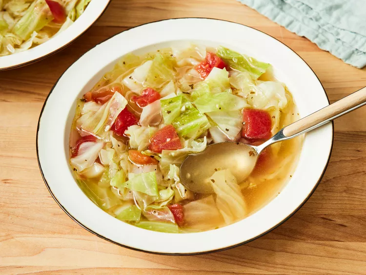

Healing Cabbage Soup

Home
Description
My body craves this cabbage soup whenever I have a cold, but
it's equally delicious on a cold winter's night. It's so easy
to make; add extra vegetables, leftover chicken, or rice for a
more substanital meal.
Ingredients
- 3 tablespoons olive olive
- 1/2 onion, chopped
- 2 cloves garlic, chopped
- 2 quarts water
- 4 teaspoons chicken bouillon granules
- 1 teaspoon salt, or to taste
- 1/2 teaspoon black pepper, or to taste
- 1/2 head cabbage, cored and coarsely chopped
- 1 (14.5 ounce) can Italian-style stewed tomatoes,
drained and diced
Steps
- In a large stockpot, heat olive oil over medium heat. Stir
in onion and garlic; cook until onion is tansparent, about
5 minutes.
- Stir in water, bouillon, salt, and pepper. Bring to a boil,
then stir in cabbage. Simmer until cabbage wilts, about
10 minutes.
- Stir in tomatoes. Return to a boil, then simmer 15 to 30
minutes, stirring often.
- Serve hot and enjoy!